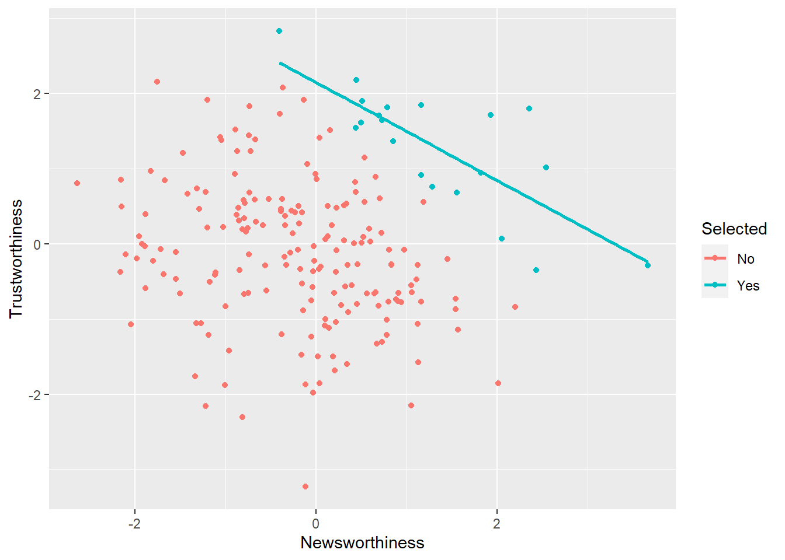
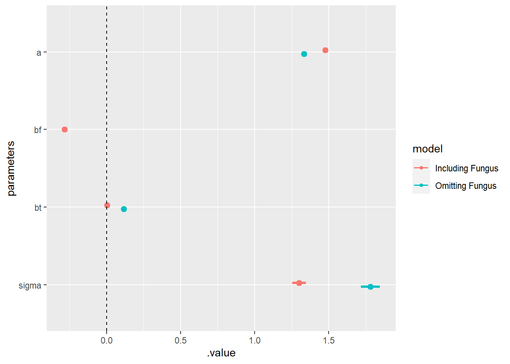
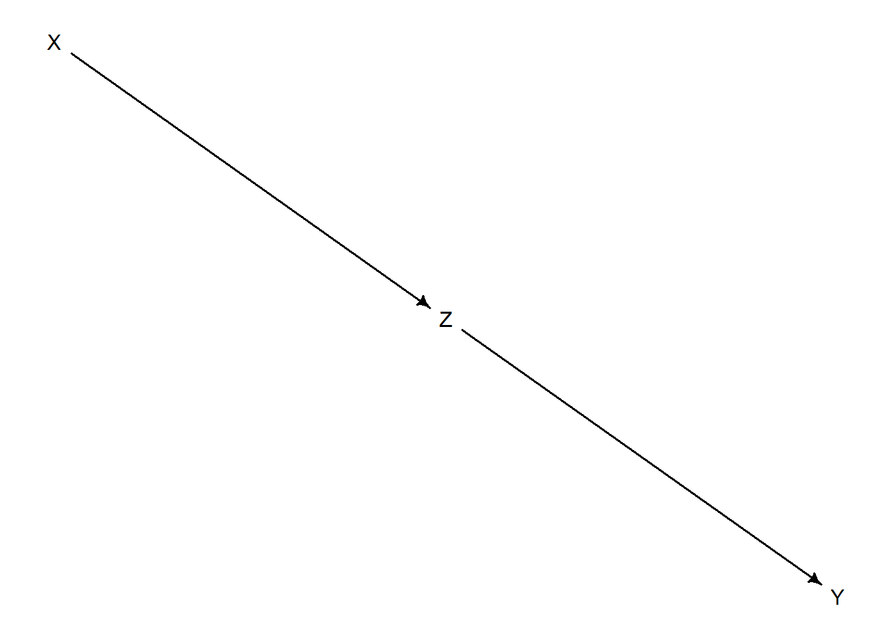
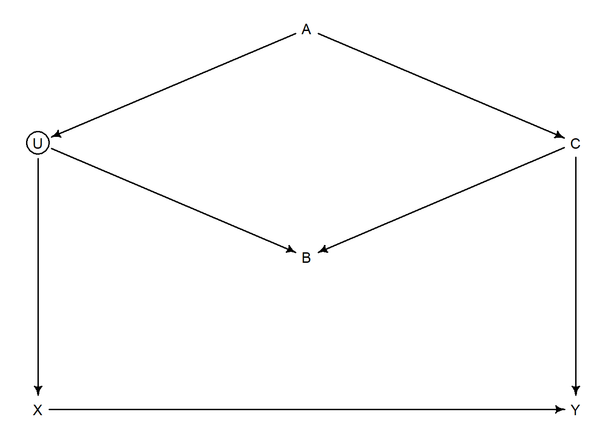
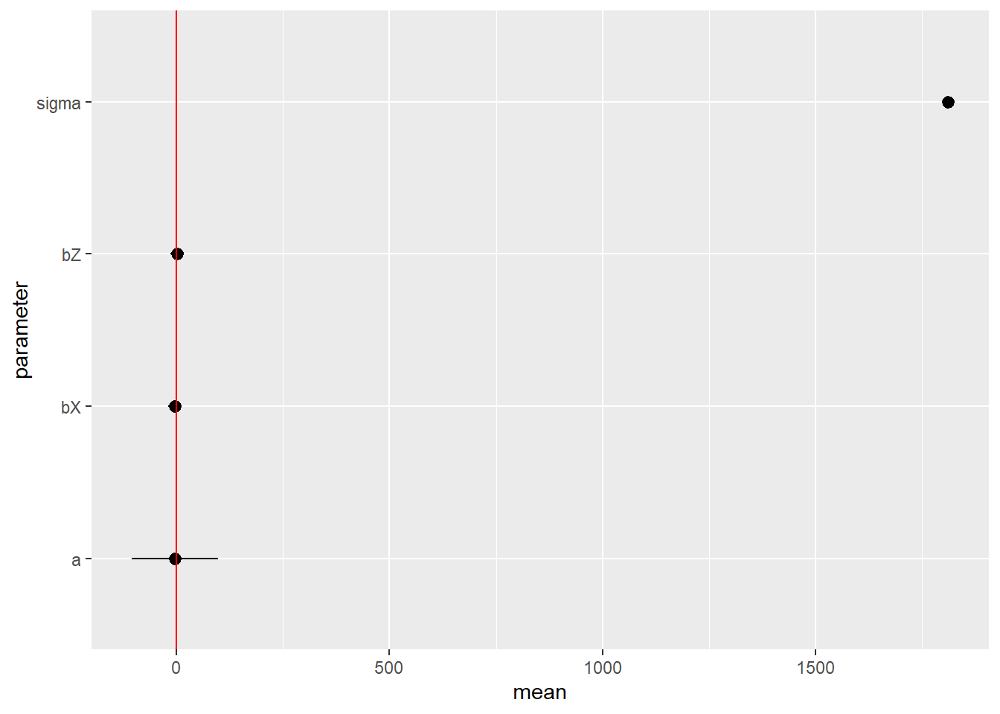
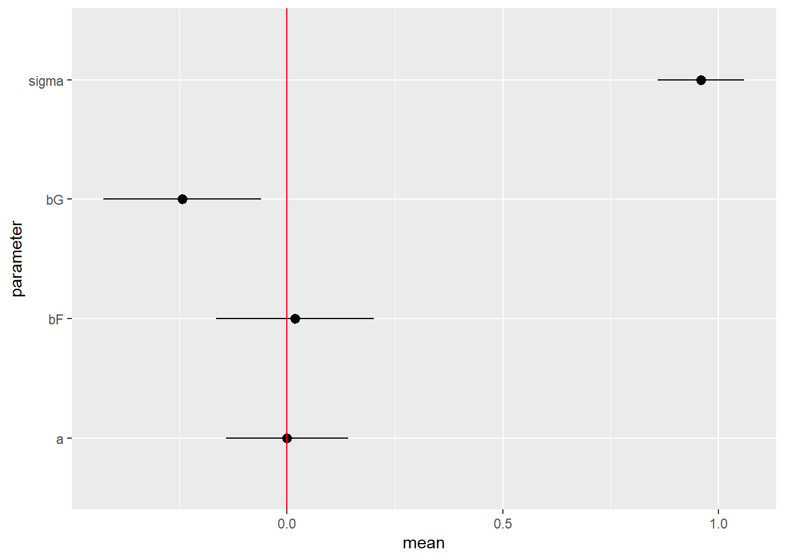

Chapter 6 The Haunted DAG & The Causal Terror
6.1 Chapter Notes
The chapter opens with an example of a selection effect. Assuming that journal editors and peer reviewers care about both novelty and rigour, we can expect to see a negative correlation between the two in published papers.
Here’s a simulation and a chart:
set.seed(1914)
N <- 200 # we simulate 200 papers
p <- 0.1
nw <- rnorm(N) # we create a newsworthiness figure for each paper
tw <- rnorm(N) # we create a trustworthiness figure for each paper
# note that there is no correlation between the two in the simualation
s <- nw + tw
q <- quantile( s , 1-p ) # the top 10% of papers are accepted
selected <- ifelse( s >= q , "Yes" , "No" ) # are the papers selected? i.e. published
data_pub <- tibble(Trustworthiness = tw, Newsworthiness= nw,Selected =selected)
ggplot(mapping=aes(Newsworthiness,Trustworthiness,colour=Selected))+
geom_point(data=data_pub)+
geom_smooth(data=filter(data_pub,Selected=="Yes"),method=lm,formula ='y ~ x',se=FALSE)
The blue line is the negative correlation between newsworthiness and trustworthiness induced by the selection process. This effect can occur inside of a multiple regression, where it is called collider bias.
Multicollinearity
How do multiple regression models behave when the predictor variables are highly correlated?
The chapter contains a simulation for the effect of leg length on height.
set.seed(909)
N <- 100 # we have 100 people
height <- rnorm(N,10,2) # we simulate their heights
leg_prop <- runif(N,0.4,0.5) #we simulate their leg length as a proportion of their height
leg_left <- leg_prop*height + rnorm( N , 0 , 0.02 ) # we calculate the length of each leg using the above
leg_right <- leg_prop*height + rnorm( N , 0 , 0.02 ) # making sure to include a little error
data_leg <- tibble(height,leg_left,leg_right)
# we fit a model and plot the parameters
m6_1 <- quap(
alist(
height ~ dnorm( mu , sigma ) ,
mu <- a + bl*leg_left + br*leg_right ,
a ~ dnorm( 10 , 100 ) ,
bl ~ dnorm( 2 , 10 ) ,
br ~ dnorm( 2 , 10 ) ,
sigma ~ dexp( 1 )
) , data=data_leg )
gather_draws(m6_1,a, bl, br, sigma) %>%
median_qi(.width=0.89)%>%
ggplot(aes(y = fct_rev(.variable), x = .value, xmin = .lower, xmax = .upper), )+
geom_pointinterval(colour = "dark grey")+
ylab("parameters")
Our simulation specified that leg length would be highly correlated with height. However, the model is very uncertain about the influence of either leg (\(b_r\) and \(b_l\)) on height. Why is this? The chapter contains a nice explanation. Our predictor variables are so highly correlated that it is almost as if we have only one predictor, used twice:
\[ \begin{aligned} y_i &∼ \text{Normal}(\mu_i, \sigma) \\ \mu_i &= \alpha + \beta_1 x_i + \beta_2 x_i \end{aligned} \] or
\[ \mu_i = \alpha + (\beta_1 + \beta_2 )x_i \] There are a huge number of combinations of \(\beta_1\) and \(\beta_2\) that could produce the data.
Here’s the chapter:
Recall that a multiple linear regression answers the question: What is the value of knowing each predictor, after already knowing all of the other predictors?
Here we sample the model parameters \(b_l\) and \(b_r\) and plot them and their sum. There are highly correlated, and their sum is centered on the true parameter value for regressing leg length on height.
data_leg_post <- spread_draws(m6_1,br,bl) %>%
mutate(`sum of bl and br`=br+bl)
ggplot(data_leg_post)+
geom_point(aes(x=br,y=bl),col='#77AADD',alpha=0.2)
ggplot(data_leg_post)+
geom_density(aes(x=`sum of bl and br`),col='#77AADD',size=1)
The chapter reintroduces the primate milk example from chapter 5.
# load data
data_milk <- read_delim("data/milk.csv", delim = ";",col_names = TRUE)%>%
mutate(K=standardize(kcal.per.g),
F=standardize(perc.fat),
L=standardize(perc.lactose))
# kcal.per.g regressed on perc.fat
m6_3 <- quap(
alist(
K ~ dnorm( mu , sigma ),
mu <- a + bF*F,
a ~ dnorm( 0 , 0.2 ),
bF ~ dnorm( 0 , 0.5 ),
sigma ~ dexp( 1 )
) , data=data_milk )
# kcal.per.g regressed on perc.lactose
m6_4 <- quap(
alist(
K ~ dnorm( mu , sigma )
, mu <- a + bL*L,
a ~ dnorm( 0 , 0.2 ),
bL ~ dnorm( 0 , 0.5 ),
sigma ~ dexp( 1 )
) , data=data_milk )
# kcal.per.g regressed on both
m6_5 <- quap(
alist(
K ~ dnorm( mu , sigma )
, mu <- a + bF*F + bL*L,
a ~ dnorm( 0 , 0.2 ),
bF ~ dnorm( 0 , 0.5 ),
bL ~ dnorm( 0 , 0.5 ),
sigma ~ dexp( 1 )
) , data=data_milk )Here is the parameter summary for regression of kcal per gram of milk on the fat percentage of the milk:
summary_6_3 <- m6_3%>%
gather_draws(a,bF,sigma)%>%
mean_qi(.width = 0.89)%>%
mutate(model="Fat")
summary_6_3%>%
print(digits = 3)## # A tibble: 3 x 8
## .variable .value .lower .upper .width .point .interval model
## <chr> <dbl> <dbl> <dbl> <dbl> <chr> <chr> <chr>
## 1 a 0.000384 -0.124 0.124 0.89 mean qi Fat
## 2 bF 0.861 0.725 0.999 0.89 mean qi Fat
## 3 sigma 0.450 0.356 0.545 0.89 mean qi FatAnd here’s the summary for the regression of kcals on lactose content:
summary_6_4 <- m6_4%>%
gather_draws(a,bL,sigma)%>%
mean_qi(.width = 0.89)%>%
mutate(model="Lactose")
summary_6_4%>%
print(digits = 3)## # A tibble: 3 x 8
## .variable .value .lower .upper .width .point .interval model
## <chr> <dbl> <dbl> <dbl> <dbl> <chr> <chr> <chr>
## 1 a -0.000894 -0.106 0.104 0.89 mean qi Lactose
## 2 bL -0.902 -1.01 -0.789 0.89 mean qi Lactose
## 3 sigma 0.380 0.300 0.458 0.89 mean qi LactoseThe parameters are almost mirror images of each other: the more fat content of the milk the higher the calories, the higher lactose content the lower the calories. This makes sense since fat is more energy dense than carbohydrate and fat and lactose contents are negatively correlated.
Here’s what happens when both are included in the same model:
summary_6_5 <- m6_5%>%
gather_draws(a,bF,bL,sigma)%>%
mean_qi(.width = 0.89)%>%
mutate(model="Both")
summary_6_5%>%
print(digits = 3)## # A tibble: 4 x 8
## .variable .value .lower .upper .width .point .interval model
## <chr> <dbl> <dbl> <dbl> <dbl> <chr> <chr> <chr>
## 1 a 0.000589 -0.108 0.104 0.89 mean qi Both
## 2 bF 0.245 -0.0567 0.541 0.89 mean qi Both
## 3 bL -0.676 -0.970 -0.386 0.89 mean qi Both
## 4 sigma 0.378 0.301 0.456 0.89 mean qi BothHere’s a plot:
bind_rows(summary_6_3, summary_6_4,summary_6_5) %>%
ggplot(aes(y = fct_rev(.variable), x = .value, xmin = .lower, xmax = .upper, color = model)) +
geom_pointinterval(position = position_dodge(width = -0.3))+
geom_vline(xintercept=0, linetype = "dashed")+
ylab("parameters")
Including both fat and lactose contents in the model pulls the parameter estimates \(b_F\) and \(b_L\) towards zero, and about doubles the uncertainty around both.
Here’s a pairs plot of the two variables:
ggpairs(data=select(data_milk,kcal.per.g,perc.fat,perc.lactose))
The chapter summarises:
These two variables are negatively correlated, and so strongly so that they are nearly redundant. Either helps in predicting kcal.per.g, but neither helps as much once you already know the other…. The problem of multicollinearity is amember of a family of problems with fitting models, a family sometimes known as non-identifiability. When a parameter is non-identifiable, it means that the structure of the data and model do not make it possible to estimate the parameter’s value.
And here’s a DAG the chapter suggests for this case. D here is how dense the milk needs to be, and is related to how frequently the species nurses. Species that nurse more often tend to have relatively more lactose and less fat in their milk.

Post-Treatment Bias
The chapter describes bias that can result from the inclusion of varibels in a model that should be omitted. One example of this is post-treatment bias.
The case study in the chapter concerns anti-fungal soil treatments, and their effect on plant height. Plants are sprouted and their initial heights are measured. Various treatments are applied, the plants’ final heights are measured, and the presence or absence of fungus is noted.
The fungus should not be included in a model designed to estimate the effect of the anti-fungal treatment on plant height. The proposed mechanism by which anti-fungal treatment would lead to more plant growth is by killing fungus. By including the presence/absence in the model we are in effect asking “how helpful is the anti-fungal treatment, relative to some default treatment, assuming fungal growth is the same in each case.” This is not the question we need to answer. Here’s a DAG:
dag_fungus <- dagitty("dag{H_0 -> H_1; F -> H_1; T -> F; }")
coordinates(dag_fungus) <- list( x=c(H_0=0,H_1=1, F=2, T=3) , y=c(H_0=0,H_1=0,F=0, T=0) )
drawdag( dag_fungus)
Here:
- \(H_0\) and \(H_1\) are initial and final heights
- \(F\) is presence or absence of fungus
- \(T\) is the treatment applied to the soil
By including the fungus in the treatment we are blocking the causal path between treatment and final height.
Here’s a simulation from the chapter:
set.seed(71)
N <- 1000 #1,000 plants
# inital heights
h0 <- rnorm(N,10,2)
treatment <- rep( 0:1 , each=N/2 ) # 0 is no treatment, 1 is the anti-fungal treatment
#anti-fungal treatment reduces probability of fungus
fungus <- rbinom( N , size=1 , prob=0.5 - treatment*0.4)
# final height depends on initial height and fungus
h1 <- h0 + rnorm( N , 5 -3*fungus)
data_fungus <- tibble( h0=h0 , h1=h1 , treatment=treatment , fungus=fungus )And here’s a linear model using the proportion of plant growth \(p\).
\[ \begin{aligned} h_{1,i} &\sim \text{Normal}(\mu_i,\sigma)\\ \mu_i &= h_{0,i} \times p\\ p &= \alpha + \beta_T T_i + \beta_F F_i \\ \alpha &\sim \text{Log-Normal}(0,0.2)\\ \beta_T &\sim \text{Normal}(0,0.5)\\ \beta_F &\sim \text{Normal}(0,0.5) \\ \sigma &=\text{Exponential}(1) \end{aligned} \]
And here’s the model in quap, with the parameter estimates:
m6_7 <- quap( alist(
h1 ~ dnorm( mu , sigma ),
mu <- h0 * p,
p <- a + bt*treatment + bf*fungus,
a ~ dlnorm( 0 , 0.2 ) ,
bt ~ dnorm( 0 , 0.5 ),
bf ~ dnorm( 0 , 0.5 ),
sigma ~ dexp( 1 )
), data=data_fungus )
summary_6_7 <- m6_7%>%
gather_draws(a,bt,bf,sigma)%>%
mean_qi(.width=0.89)%>%
mutate(model="Including Fungus")
summary_6_7%>%
print(digits = 3)## # A tibble: 4 x 8
## .variable .value .lower .upper .width .point .interval model
## <chr> <dbl> <dbl> <dbl> <dbl> <chr> <chr> <chr>
## 1 a 1.48 1.46 1.49 0.89 mean qi Including Fungus
## 2 bf -0.282 -0.298 -0.267 0.89 mean qi Including Fungus
## 3 bt 0.00238 -0.0115 0.0162 0.89 mean qi Including Fungus
## 4 sigma 1.30 1.25 1.35 0.89 mean qi Including FungusThe effect of the treatment, \(b_t\) is very close to zero which we know from the simulation is not correct.
Here’s the same model, omitting fungus as a variable:
m6_8 <- quap( alist(
h1 ~ dnorm( mu , sigma ),
mu <- h0 * p,
p <- a + bt*treatment,
a ~ dlnorm( 0 , 0.2 ),
bt ~ dnorm( 0 , 0.5 ),
sigma ~ dexp( 1 )
), data=data_fungus )
summary_6_8 <- m6_8%>%
gather_draws(a,bt,sigma)%>%
mean_qi(.width=0.89)%>%
mutate(model="Omitting Fungus")
bind_rows(summary_6_7, summary_6_8) %>%
ggplot(aes(y = fct_rev(.variable), x = .value, xmin = .lower, xmax = .upper, color = model)) +
geom_pointinterval(position = position_dodge(width = -0.1))+
geom_vline(xintercept=0, linetype = "dashed")+
ylab("parameters")
Moving from the model that includes fungus to one that omits it, the model changes from being very confident that treatment doesn’t make a difference, to being very confident that it does.
Let’s revisit the DAG from earlier, and look at the conditional independencies that it implies:
impliedConditionalIndependencies(dag_fungus)## F _||_ H_0
## H_0 _||_ T
## H_1 _||_ T | FThe third one here means that final height is independent from treatment, conditioning on fungus.
This section in the chapter closes with an example where conditioning on a post-treatment variable gives the false impression that a treatment does work:
dag_fungus_M <- dagitty("dag{M [unobserved]; H_0 -> H_1; M -> H_1; M -> F; T -> F; }")
coordinates(dag_fungus_M) <- list( x=c(H_0=0,H_1=1,M=1.5, F=2, T=3) , y=c(H_0=0,H_1=0,M=1.1, F=0, T=0) )
drawdag( dag_fungus_M)
The unobserved variable here is moisture. In this DAG, treatment does not affect plant growth at all, but both plant growth and fungal growth are encouraged by moisture. From the chapter:
A regression of \(H_1\) on \(T\) will show no association between the treatment and plant growth. But if we include \(F\) in the model, suddenly there will be an association.
This is an example of collider bias. The rest of the chapter walks through a couple of examples of collider bias, including one where a measured variable becomes a collider because of the influence of an unmeasured one.
Collider Bias
Here are the four elemental relations that make up DAGs:
- The Fork

In a fork, \(Z\) is a common cause of \(X\) and \(Y\), and this creates a correlation between them. However \(X\) and \(Y\) are independent, conditional on \(Z\).
- The Pipe

In a pipe, conditioning on \(Z\) blocks the causal path between \(X\) and \(Y\). This is like the fungus example from earlier.
- The Collider

In a collider, there will be no association between \(X\) and \(Y\), unless you condition on \(Z\). Think about the academic paper example from the start of the chapter.
- The Descendant

From the chapter:
A descendent is a variable influenced by another variable. Conditioning on a descendent partly conditions on its parent … in [this DAG], conditioning on \(D\) will also condition, to a lesser extent, on \(Z\). The reason is that \(D\) has some information about \(Z\). In this example, this will partially open the path from \(X\) to \(Y\), because \(Z\) is a collider. But in general the consequence of conditioning on a descendent depends upon the nature of its parent.
The chapter closes with a recipe for deciding which variables to condition on, along with some practice examples:
List all of the paths connecting \(X\) (the potential cause of interest) and \(Y\) (the outcome).
Classify each path by whether it is open or closed. A path is open unless it contains a collider.
Classify each path by whether it is a backdoor path. A backdoor path has an arrow entering \(X\).
If there are any open backdoor paths, decide which variable(s) to condition on to close it (if possible).
Here’s an example from the chapter:
dag_6_1 <- dagitty("dag { U [unobserved] X -> Y X <- U <- A -> C -> Y U -> B <- C}")
coordinates(dag_6_1) <- list( x=c(X=0,U=0,A=1,B=1, C=2, Y=2) , y=c(X=1,U=0.5,A=0.25,B=0.75, C=0.5, Y=1) )
drawdag(dag_6_1)
We are interested in the causal effect of \(X\) on \(Y\). To close the open backdoor path through \(A\), we can condition on either \(A\) or \(C\). The dagitty package can tell us this:
adjustmentSets( dag_6_1 , exposure="X" , outcome="Y" )## { C }
## { A }We must not condition on \(B\), this would open a backdoor path that is currently closed.
6.2 Questions
6E1
Question
List three mechanisms by which multiple regression can produce false inferences about causal effects.
Answer
Multicollinearity - regression on highly correlated predictors can produce misleading parameters, as in the leg, or primate milk examples.
Post-treatment bias - regression on post-treatment effects can make it appear that the treatment is not effective, as in the fungus example.
Collider bias - regression on a collider can create the appearance of an association between two variables that does not exist.
6E3
Question
List the four elemental confounds. Can you explain the conditional dependencies of each?
Answer
- Fork - X and Y are independent, once we condition on Z.

- Pipe - X and Y are independent, once we condition on Z.

- Collider - Conditioning on Z creates an association between X and Y.

- Descendant - Conditioning on D partly conditions on Z.

6E4
Question
How is a biased sample like conditioning on a collider? Think of the example at the open of the chapter.
Answer
Using the publishing example at the beginning of the chapter, we know that there is no causal relationship between trustworthiness and newsworthiness (because that’s how the simulation is constructed). However, both cause selection for publication, creating a collider. We saw that sampling only the published papers created a negative correlation between the two predictors.
Conditioning on publication would have the same effect - once we know newsworthiness and publication status, we can deduce some information about trustworthiness, or vice versa. For example, a study that was published but had low newsworthiness must be quite trustworthy. A study with high trustworthiness that wasn’t published is probably not very newsworthy.
Conditioning on the collider has the same result as only sampling from papers that were published: the creation of a spurious association.
6M1
Question
Modify the DAG on page 186 to include the variable V, an unobserved cause of C and Y: C ← V→ Y. Reanalyze the DAG. How many paths connect X to Y? Which must be closed? Which variables should you condition on now?
Answer
Here’s the original DAG:

Now we add the unobserved V:

Previously, we could condition on either A or C to find the direct casual effect of X on Y. Now C is a collider, so we should condition on A.
The dagitty package corrobates this:
adjustmentSets( dag_6M1B , exposure="X" , outcome="Y" )## { A }6M2
Question
Sometimes, in order to avoid multicollinearity, people inspect pairwise correlations among predictors before including them in a model. This is a bad procedure, because what matters is the conditional association, not the association before the variables are included in the model. To highlight this, consider the DAG X → Z → Y. Simulate data from this DAG so that the correlation between X and Z is very large. Then include both in a model predicting Y.
Do you observe any multicollinearity? Why or why not? What is different from the legs example in the chapter?
Answer
Modifying the leg example:
N <- 1000
set.seed(909)
Y <- rnorm(N,10,2)
Y_prop <- runif(N,0.4,0.5)
Z <- Y_prop*Y + rnorm( N , 0 , 0.02 )
Z_prop <- runif(N,0.8,0.9)
X <- -Z_prop*Z + rnorm( N , 0 , 0.02 )
data_6M2 <- bind_cols(X=X,Z=Z,Y=Y)
ggpairs(data_6M2)set.seed(100)
m6M2 <- quap(
alist(
Y ~ dnorm( mu , sigma ) ,
mu <- a + bX*X + bZ*Z ,
a ~ dnorm( 10 , 100 ) ,
bX ~ dnorm( -3 , 10 ) ,
bZ ~ dnorm( 2 , 10 ) ,
sigma ~ dexp( 1 )
) , data=data_6M2 )
ggplot(data=precis(m6M2))+
geom_pointrange(aes(x=rownames(precis(m6M2)),y=mean,ymin=`5.5%`,ymax=`94.5%`))+
geom_hline(yintercept = 0,col="red")+
xlab("parameter")+
coord_flip()## Warning in sqrt(diag(vcov(model))): NaNs produced
## Warning in sqrt(diag(vcov(model))): NaNs produced
## Warning in sqrt(diag(vcov(model))): NaNs produced
## Warning in sqrt(diag(vcov(model))): NaNs produced
## Warning in sqrt(diag(vcov(model))): NaNs produced
## Warning in sqrt(diag(vcov(model))): NaNs produced
## Warning in sqrt(diag(vcov(model))): NaNs produced
## Warning in sqrt(diag(vcov(model))): NaNs produced
## Warning in sqrt(diag(vcov(model))): NaNs produced## Warning: Removed 1 rows containing missing values (geom_segment).
In the legs example, the model was very uncertain about the parameter values for both legs. This is not the case here, the parameter estimate for the influence of Z is about as expected, 2-2.5. The model has correctly identified that the only influence of X on Y is through Z, and so produces parameter estimates for X much smaller than expected. We have a pipe, and including Z blocks the path from X to Y, but we don’t have the problems with identifiability that we had in the legs example.
There is no way to tell this scenario apart from the legs example simply from looking at the pairwise correlations.
6M3
Question
Learning to analyze DAGs requires practice. For each of the four DAGs below, state which variables, if any, you must adjust for (condition on) to estimate the total causal influence of X on Y.
Answer
- We should condition on Z to block the backdoor path.
drawdag(dag_6M3.1)
adjustmentSets(dag_6M3.1,exposure = "X",outcome = "Y",effect = "total")## { Z }- We no longer want to condition on Z - it is a collider.
drawdag(dag_6M3.2)
adjustmentSets(dag_6M3.2,exposure = "X",outcome = "Y",effect = "total")## {}- We no longer want to condition on Z - it is a collider.
drawdag(dag_6M3.3)
adjustmentSets(dag_6M3.3,exposure = "X",outcome = "Y",effect = "total")## {}- We don’t want to condition on Z here because we are looking for the total casual influence of X on Y - one route of this influence goes through Z. We should condition on A however, to block the backdoor path.
drawdag(dag_6M3.4)
adjustmentSets(dag_6M3.4,exposure = "X",outcome = "Y",effect = "total")## { A }6H1
Question
Use the Waffle House data to find the total causal influence of number of Waffle Houses on divorce rate. Justify your model or models with a causal graph.
Answer
Looking through the available variables, I think I want to consider the following: * Number of Waffle Houses (W) * Divorce rate (D) * Whether we’re in the South (S) * Marriage rate (M) * Median age of marriage (A)
Here’s my proposed DAG:
dag_waf <- dagitty( "dag {S -> W; S -> M; S->A; W -> D ; M -> D; A -> D;}")
coordinates(dag_waf) <- list( x=c(W=0,S=1,M=1,D=1,A=2) , y=c(S=0,W=1,M=1,A=1,D=2) )
drawdag(dag_waf )
adjustmentSets(dag_waf,exposure = "W",outcome = "D",effect = "total")## { A, M }
## { S }So we need to include S in the model, to block the backdoor path through A and M.
After loading the data, standardising, and doing some prior simulation, I have the model below:
set.seed(100)
m6H1 <- quap(
alist(
Divorce ~ dnorm( mu , sigma ) ,
mu <- a[South] + bW*WaffleHouses,
a[South] ~ dnorm( 0 , 0.6 ) ,
bW ~ dnorm( 0 , 0.2 ) ,
sigma ~ dexp( 1 )
) , data=data_waf )
ggplot(data=precis(m6H1,depth = 2))+
geom_pointrange(aes(x=rownames(precis(m6H1,depth = 2)),y=mean,ymin=`5.5%`,ymax=`94.5%`))+
geom_hline(yintercept = 0,col="red")+
xlab("parameter")+
coord_flip()This is consistent with the number of Waffle Houses having no causal effect on the divorce rate.
6H2
Question
Build a series of models to test the implied conditional independencies of the causal graph you used in the previous problem. If any of the tests fail, how do you think the graph needs to be amended?
Does the graph need more or fewer arrows? Feel free to nominate variables that aren’t in the data.
Answer
impliedConditionalIndependencies(dag_waf)## A _||_ M | S
## A _||_ W | S
## D _||_ S | A, M, W
## M _||_ W | SWe’ll first test that the divorce rate is independent of being in the South, conditional on number of waffle houses, median age of marriage, and marriage rate.
set.seed(100)
m6H2.1 <- quap(
alist(
Divorce ~ dnorm( mu , sigma ) ,
mu <- a[South] + bW*WaffleHouses + bM*Marriage + bA*MedianAgeMarriage,
a[South] ~ dnorm( 0 , 0.6 ) ,
bW ~ dnorm( 0 , 0.2 ) ,
bM ~ dnorm( 0 , 1 ) ,
bA ~ dnorm( 0 , 1 ) ,
sigma ~ dexp( 1 )
) , data=data_waf )
m6H2.1_post <- post <- extract.samples(m6H2.1)
m6H2.1_post$diff_south <- m6H2.1_post$a[,1] - m6H2.1_post$a[,2]
ggplot(data=precis( m6H2.1_post , depth=2 ))+
geom_pointrange(aes(x=rownames(precis( m6H2.1_post , depth=2 )),y=mean,ymin=`5.5%`,ymax=`94.5%`))+
geom_hline(yintercept = 0,col="red")+
xlab("parameter")+
coord_flip()The values of the diff_south parameter are consistent with the conditional independence, but I’m not completely happy that I’ve caught all the ways that being in the South can influence the divorce rate. Perhaps I should add an arrow directly from the South to the divorce rate, or add in an unobserved variable to stand in for cultural/ religious attitudes towards divorce.
We’ll test one more conditional independence, one that I think is more likely to be true. Let’s see if the median age of marriage is independent of the number of waffle houses, once we condition on being in the south.
set.seed(100)
m6H2.2 <- quap(
alist(
MedianAgeMarriage ~ dnorm( mu , sigma ) ,
mu <- a[South] + bW*WaffleHouses,
a[South] ~ dnorm( 0 , 0.6 ) ,
bW ~ dnorm( 0 , 1 ) ,
sigma ~ dexp( 1 )
) , data=data_waf )
m6H2.2_post <- extract.samples(m6H2.2)
m6H2.2_post$diff_south <- m6H2.2_post$a[,1] - m6H2.2_post$a[,2]
ggplot(data=precis( m6H2.2_post , depth=2 ))+
geom_pointrange(aes(x=rownames(precis( m6H2.2_post , depth=2 )),y=mean,ymin=`5.5%`,ymax=`94.5%`))+
geom_hline(yintercept = 0,col="red")+
xlab("parameter")+
coord_flip()The parameter bW is estimated to be quite close to zero.
6H3
Question
Use a model to infer the total causal influence of area on weight. Would increasing the area available to each fox make it heavier (healthier)?
You might want to standardize the variables. Regardless, use prior predictive simulation to show that your model’s prior predictions stay within the possible outcome range.
Answer
We don’t need to condition on any other parameters since we’re looking for the total causal effect.

## {}Unexpectedly, the total causal impact of area on weight appears to be zero, or slightly negative. Increasing area would not make foxes heavier.
6H4
Question
Now infer the causal impact of adding food to a territory. Would this make foxes heavier? Which covariates do you need to adjust for to estimate the total causal influence of food?
Answer
We don’t need to condition on any other parameters assuming the DAG we’re given is correct.
## {}The total causal impact of food on weight again appears to be negative. Increasing food would not make foxes heavier.
6H5
Question
Now infer the causal impact of group size. Which covariates do you need to adjust for? Looking at the posterior distribution of the resulting model, what do you think explains these data? That is, can you explain the estimates for all three problems? How do they go together?
Answer
Now we have to condition on food to block the backdoor path.
## { F }
We see that the causal impact of group size is negative, and that the direct effect of food is zero or slightly positive. It is at least not so negative as the total causal effect.
I’d suggest that what’s happening here is that the main effect of an increase in food (either directly or by an increase in area) would be to increase group size, which has a detrimental effect on weight. This effect seems to overwhelm any direct effect of increasing food on weight.